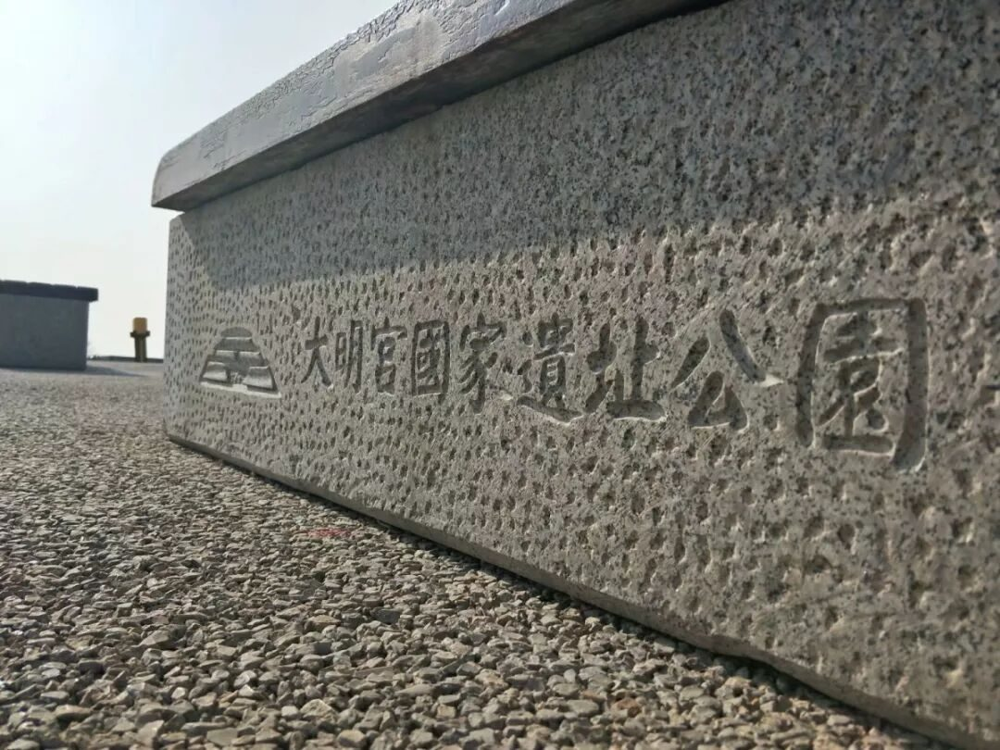
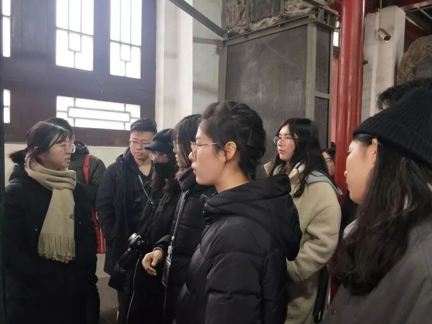
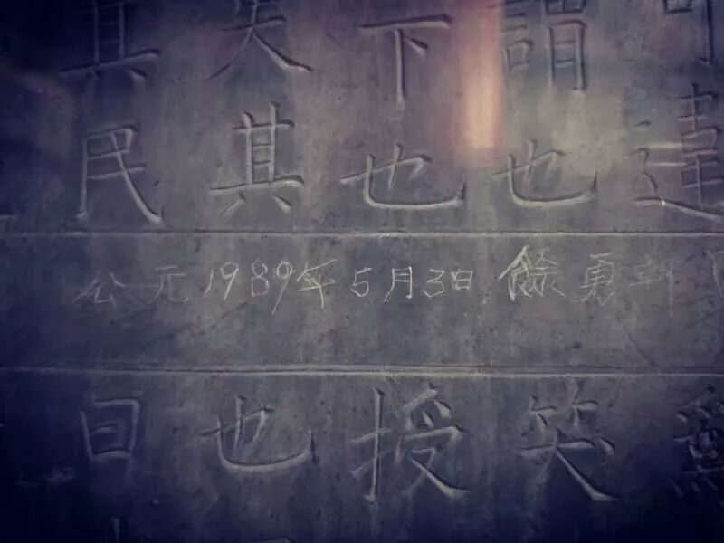
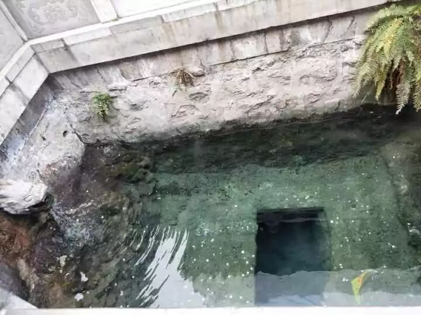
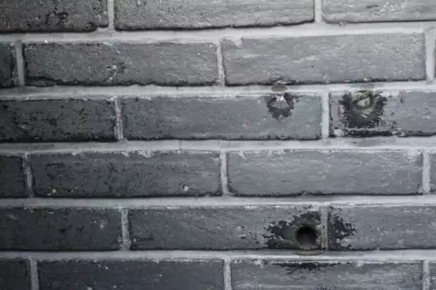
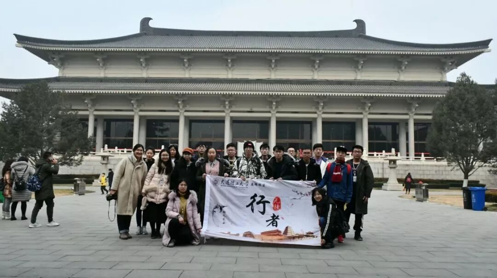

【秦简拓语·六】相遇行者无疆、相遇长安

九天阊阖开宫殿，
万国衣冠拜冕旒。
——王维
以大一的身份靠近你，
行者无疆让我惊喜；
以文字的形式记录你，
长安之行让我充实；
以探寻的目光观察你，
文物保护让我思索。
满城遗址的长安
它植于真实的土地，呈现千年沧桑：一览万年的陕西历史博物馆、固若金汤的西安城墙、精妙绝伦的碑林书法、荒芜空旷的阿房宫遗址、盛唐再现的大唐芙蓉园、历经风雨的的大明宫遗址、千姿百态的秦始皇兵马俑、遥遥相望的大雁塔小雁塔、气势恢宏的乾陵陵墓……
盈满历史的长安

它承载着厚重的历史，诉说万种风情：汉武帝东征西讨驰骋疆场的神勇、秦始皇纸醉金迷挥金如土的奢靡、民族英雄千古功臣的张学良、盛唐时代万国来朝的尊荣、时代更迭攻城略地的惨烈、岁月荏苒英雄美人的雪月风花、缠绵悱恻刻骨铭心的爱情故事……

破坏与保护的西安
厚重的历史积淀，让西安这座千年古城成为了无与伦比的文化宝库。然而，由于建成区与遗址区的高度重叠，文物保护与城市开发建设之间的矛盾也异常凸显。西安大小遗址遍布，城市之中遍布文物，城市外围也被古迹遗址环绕，历朝历代留下的文物古迹灿若星辰，而城市的发展又是大势所趋，因此，城市发展给文物保护带来了不容小觑的挑战。

西安的文化古迹主要作为旅游资源开发，因此，在文物保护方面做得并不能使人满意，多处的文化古迹没有能够得到及时的保护或者合理的修缮。就如阿房宫遗址毫无保护的展现在那里，宫殿夯基就任凭风雨侵蚀；裸露石碑上的字迹经过无数人的“摩挲”只剩下浅浅的痕迹，千百年前的神韵耿介早已荡然无存；墙壁上西安事变留下的弹痕不经意间变得“圆润”，不知讽刺历史还是讽刺游人；华清宫的温池里、陵墓中的是石棺上，散落着硬币、纸币，坚贞的爱情和神圣的愿望终究没能躲过铜臭的沾染；被盗走的文物，到底身在何处。

身为当代大学生，我们的确没有办法去建立这样那样的保护机制，但我们的确有能力去让自己做到不破坏文物，除此以外，还可以通过多媒体等途径对文化保护进行一定范围的宣传。
行者无疆
相遇长安

跨越1600多公里、结伴18位行者、践行7天的长安之行、行走15个景区、聆听数十人的见解感想、发放数百张调查问卷、穿越千年历史……
长安之旅，一路修行；
文物保护，一路思考；
行者无疆，一路感激。
END
来源丨行者无疆实践团
文字丨张媛媛
排版丨王洁
审核丨潘雯雯 邓子孚
行者无疆实践团
QQ：2758025831

随行者一起认识世界
长按二维码关注